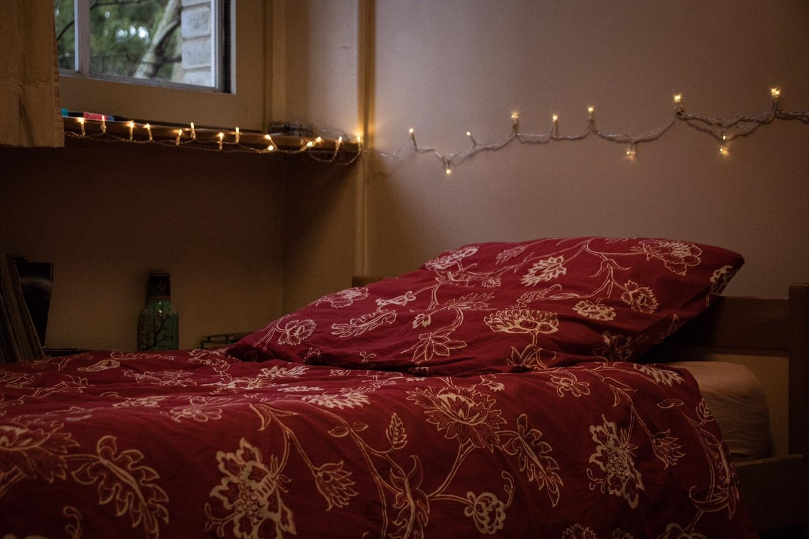

La vie à l'internat
Vivre à deux pas de sa classe.
Le rythme et l'exigence de la prépa supportent mal les longs trajets. L'internat du lycée accueille 144 étudiantes et étudiants de CPGE dans un cadre calme, confortable et bien équipé : un vrai atout pour réussir ses années de prépa.

Un cadre pensé pour travailler… et souffler
Des espaces pour étudier au calme le soir, et d'autres pour se détendre entre deux dissertations.
Chambres simples ou doubles
Salles de travail
Équipement informatique
Ambiance studieuse
Calme
Espace détente
Terrains de sport
En images

Informations pratiques
Pour qui ?
Réservé aux étudiantes et étudiants des classes préparatoires du lycée.
Combien de places ?
144 places : 72 pour les filles, 72 pour les garçons.
Quand ?
Ouvert du dimanche 20 h au samedi 8 h. Fermé pendant les vacances scolaires.
Où ?
30, rue Alexandre Dumas, à Saint-Germain-en-Laye, tout près du lycée et à 10 minutes à pied du RER A.
Demander une place à l'internat
La demande se fait sur Parcoursup, en même temps que les vœux d'admission en hypokhâgne.
Aller sur ParcoursupCritères d'attribution
Hébergement, transport, inscriptions
Un dispositif prend en charge une partie des frais d'hébergement, de transport et d'inscription aux concours des étudiants de CPGE.
Il est réservé aux familles dont le quotient familial annuel est inférieur ou égal à 10 140 € (revenu fiscal de référence divisé par le nombre de parts du foyer).
Renseignements : Mme Abos, caroline.abos@ac-versailles.fr
Flyer et vade-mecum de l'aide →